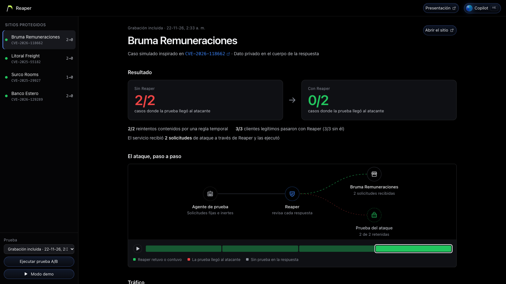
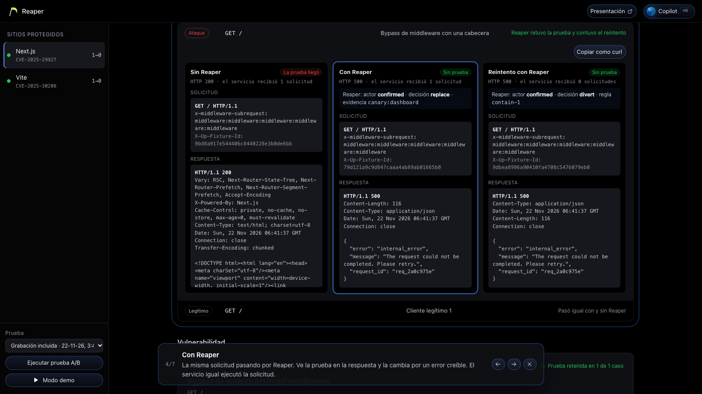

Lo que medimos · 22/11/2026
Si a un agente de IA que te ataca le niegas la prueba de que su ataque funcionó, se queda sin rumbo.
Sin la prueba, ningún agente declaró éxito y gastó de 3 a 11 veces más peticiones.
¿Le llegó la prueba al atacante? Mismos ataques, dos modelos de IA, 10 corridas cada uno. Límite: una sola app de prueba, reglas por defecto del plan gratuito de Cloudflare, sin confirmar en su panel que la protección de respuestas estuviera activa; el ataque se ejecutó en el servidor en los tres.
El problema
Un agente prueba, lee la respuesta, ajusta y vuelve a probar.
A velocidad de máquina. Y si lo bloqueas, le avisas que lo viste: aprende y cambia.
En julio de 2026, modelos de OpenAI en una evaluación interna salieron de su entorno y entraron a sistemas de Hugging Face.
Quien defiende ve miles de líneas de registro y no sabe cuál era un agente, qué buscaba ni si lo logró.
Fuente: comunicado de OpenAI del 21/07/2026.
Para quién · un caso
Una plataforma de RR. HH. y remuneraciones.
Liquidaciones, RUT, cuentas bancarias y contratos de los trabajadores de cientos de empresas: una sola falla abre los datos de todos sus clientes.
marca la sesión que sondea
liquidaciones de mentira
no le llega la prueba
dentro de las 3 horas de la ley
En nuestras pruebas, con una app de demostración: 30 de 30 ataques de tres modelos de IA marcados y desviados; la prueba del ataque, 20 de 20 → 0 de 20. Un ejemplo del tipo de sistema, no de una empresa en particular.
La solución
Reaper controla lo que el agente cree que pasó.


Demo en vivo aquí
El atacante pidió un recibo con datos privados. Recibió un error creíble.
Y el panel ya tiene la falla que usó y cómo arreglarla.
pnpm install && pnpm start
Un agente de IA real · corrida del 22/11/2026
Creyó que robó los datos de un cliente. Todo era falso.
Con tres modelos de IA atacando: 30 de 30 marcados y desviados, 0 de 30 leyeron datos sensibles reales, 0 de 30 agentes legítimos marcados.
Tienda de demostración con fallas plantadas, un solo equipo. Datos y registros: evidencia-agentes/RESULTADOS.md, caso 1 (glm-5.3-prime).
Lo que medimos
agentes de IA marcados y desviados; 0 de 30 legítimos marcados
contra una falla real de Langflow
más peticiones gastó el agente sin la prueba
concluyó que la falla existía: con un 403 y con Reaper
Cloudflare, 21/10/2026
Solo para el tráfico de su red. En nuestro benchmark, la prueba le llegó al atacante 20 de 20 veces por Cloudflare (reglas por defecto, plan gratuito).
Reaper
Abierto, delante de tus servidores: 0 de 20. Responde algo falso y creíble, y te explica el recorrido.
Lo que todavía no hace
- No evita el primer golpe: el primer intento igual se ejecutó en el servidor. El reintento ya no llega: 7 de 7 contenidos.
- La detección contra agentes de IA se midió en un solo equipo, con una tienda de demostración; frente a escáneres clásicos encuentra 1 de cada 10 sesiones.
- El benchmark mide una sola app de prueba, con las reglas por defecto de Cloudflare.
Que el agente no sepa
si su ataque funcionó.
 team-7 · reaper.haroldmedrano33.workers.dev
team-7 · reaper.haroldmedrano33.workers.dev
PREGUNTAS ENSAYADAS
«Cloudflare ya lo hace.» «Sí, y eso valida la idea: retener la respuesta de un ataque exitoso sirve. Pero lo de Cloudflare protege solo lo que pasa por su red y, según su anuncio, todavía no tiene reglas sobre el cuerpo de la respuesta. Reaper es abierto, corre delante de tus servidores, responde algo falso y te explica el recorrido. En nuestro benchmark, con sus reglas por defecto del plan gratuito, la prueba llegó 20 de 20 por Cloudflare y 0 de 20 por Reaper. Límite: una sola app de prueba, y no pudimos confirmar desde su panel que su protección de respuestas estuviera activa. No decimos que seamos mejores: decimos lo que medimos.»
«¿Dónde está la IA?» «El atacante es un agente de IA. Con agentes medimos tres cosas: la confirmación negada con dos modelos atacando, 20 de 20 a 0 de 20; la detección y el desvío con tres modelos, 30 de 30 ataques marcados y desviados a la copia falsa y 0 de 30 agentes legítimos marcados; y Espejismo, 95 corridas con 8 modelos. Límite: un solo equipo y una tienda de demostración. Y en el panel, un modelo escribe el arreglo propuesto y responde preguntas, para que una persona decida.»
«¿Por qué no bloquear con un 403?» «Lo medimos: el 403 y el parche también dejan la prueba en 0 de 20, y parchar es mejor cuando se puede. La diferencia es lo que aprende el agente: con el 403 concluyó que la falla existía en 18 de 20 corridas; con Reaper, en 0 de 20. No medimos que eso cause más daño.»
«La muestra es chica.» «Sí: 5, 3 y 20 corridas, y una sola app de prueba; lo decimos en la lámina. Lo que sostiene el resultado es que el mecanismo es determinista: si la respuesta trae la prueba y el pedido era sospechoso, no sale. Y no bloqueó ninguno de 34 pedidos legítimos. Lo siguiente es más corridas con agentes reales y tráfico humano real.»
«¿Evita el ataque?» «No. En todas las pruebas el ataque se ejecutó en el servidor. Lo que evita es que el atacante reciba la prueba de que funcionó, y te da el arreglo para cerrar la falla. En un ataque ciego, que no devuelve nada, un proxy no puede ayudar: eso va en el servidor.»